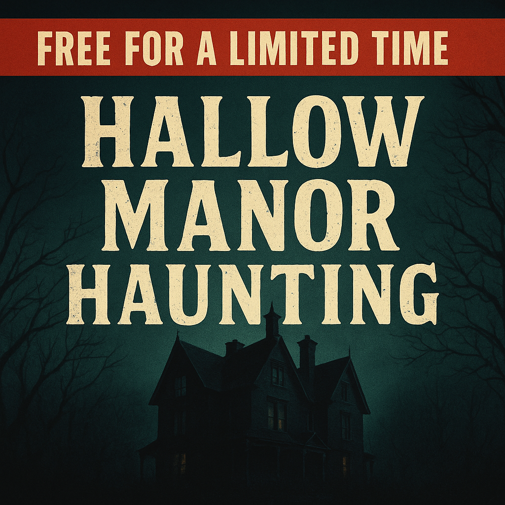

Case 7: The Hollow Manor Haunting
Halloween Special — Difficulty: Extreme
On Halloween night five friends broke into Hollow Manor for a dare. Four returned; Vanessa Clarke did not. Police called it a runaway, but recovered evidence suggests someone planned that night — and several people lied about what they saw.
Your mission: determine who orchestrated the “haunting,” why they did it, and which piece of evidence exposes them — while sorting truth from deliberate lies.
Witness Statements (survivors & locals)
Liam (survivor): “I stepped out to the porch for a smoke — when I turned back the others were inside. Vanessa was with Jenna. I ran for my phone when I heard a crash, then I ran.”
(Liam later says he left before things got dark.)
Rosa (survivor): “I heard whispering and footsteps in the attic. I went up and saw a shadow — I screamed and left. I didn’t touch anything.”
(Rosa’s shoes were later found with wet mud.)
Jenna (survivor): “We were messing with the old Ouija board as a joke. Vanessa stared at the portrait and then vanished from the hallway. I stayed to call for help.”
(Jenna claimed she never left Vanessa’s side.)
Felix (survivor, prankster): “It was only me doing spooky stuff — wiring a speaker to play whispers. I didn’t touch Vanessa. I swear I was on the back lawn.”
(Felix was observed earlier buying batteries and an amplifier.)
Oscar (former caretaker): “I was fired years ago. People say the Manor is cursed — but I left that night before midnight. I had no reason to harm anyone.”
(Oscar still holds a master ring of keys in his truck.)
Evidence Locker
Corrupted Phone File (Vanessa’s last clip): Audio with a faint male whisper, then static — file metadata shows it was saved at 11:07 pm, but a hidden image frame exists showing a reflection in a cracked mirror.
Wet Mud on Rosa’s Shoes: Mud traces match a path behind the manor where the caretaker’s service shed sits.
Ouija Board Notes: Smeared ink and a torn corner with handwriting that matches Jenna’s grocery receipt signature.
Keychain with “Hollow” tag: Found in the underbrush near the back gate; engraving shows initials “O.P.”
Vanessa’s Journal: Final entry: “If anything happens, check the cracked mirror. — V.”
Note: lies appear in alibis (who says they left), in statements about touching evidence, and in claimed motives — not every inconsistency is proof of guilt, but purposeful contradictions are.